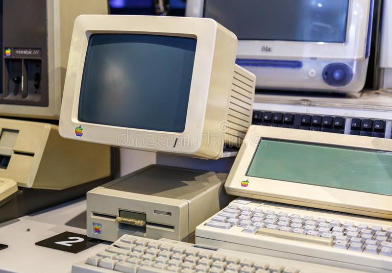
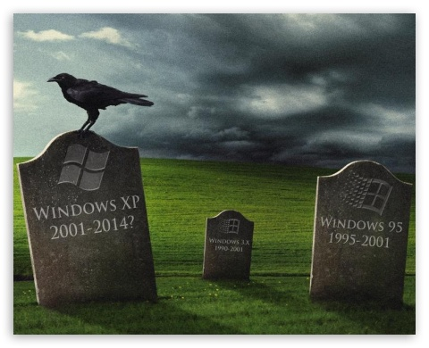
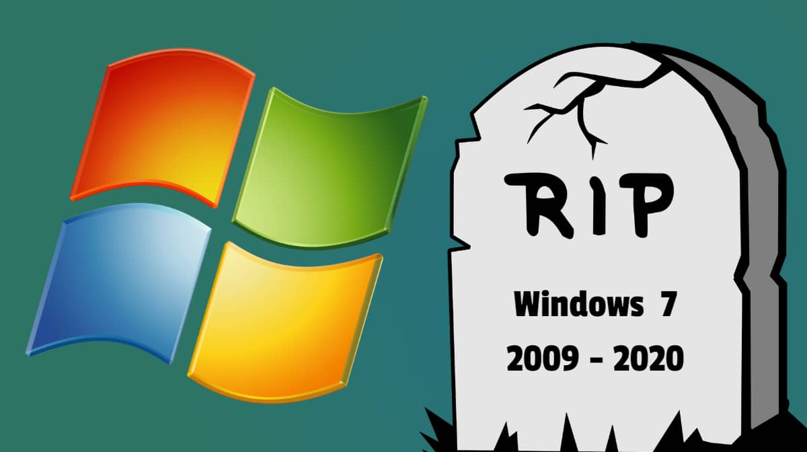
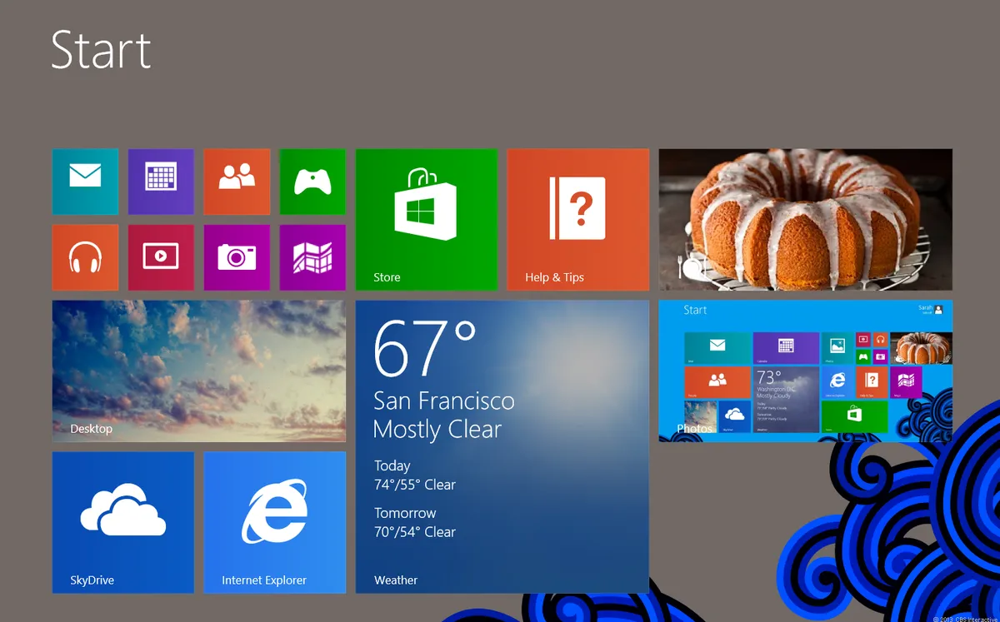

LifeMech
An operating system (OS) is fundamental software that acts as an intermediary between users, applications, and computer hardware. Its primary role is to manage various hardware resources, provide a user interface for interaction, and ensure efficient execution of software applications. Operating systems are indispensable components in modern computing devices, spanning from personal computers to smartphones, servers, and embedded systems. On this website, you can find both Windows Operating Systems and various Linux distributions. Additionally, I have added some games suitable for old PCs or laptops that do not require a graphics card, making them accessible to a broader audience. I hope you find these offerings enjoyable. As we are well aware, this is the modern age where technology continually advances, resulting in computers that have improved both in size and performance. Today, we witness modern PCs and laptops with impressive capabilities. However, it is essential to acknowledge that there are still many people who continue to use old PCs and laptops, which might not possess the same level of performance as their modern counterparts.


In this modern age, computers are essential for almost all types of work. They are widely used in schools, offices, homes, banks, and many other places. All these settings require a modern computer to ensure efficient operations. Even at home, both children and elders often need a better computer to complete their tasks effectively. However, the unfortunate reality is that many of them are stuck with old PCs or laptops that can only run outdated operating systems like Windows XP, Windows Vista, or Windows 7. Most modern programs and games demand specific operating systems with better processor speeds and RAM to function optimally. Due to the limitations in processing speed and available RAM, users find it challenging to run programs and games as they desire. This issue can lead to frustration and hinder productivity and entertainment. Upgrading to a more suitable computer or operating system becomes a necessity to meet the demands of today's digital world.

In older PCs, the processor speed is notably low, limiting their ability to efficiently run modern applications. These machines often operate on outdated systems like Windows XP or Windows Vista, which consume a significant portion of the available memory, leaving little room for running programs smoothly. As a result, computers can become laggy and frustrating to use. However, there are alternative Operating Systems available that can be better suited for your older PC or laptop, even if it has limited RAM, such as 4GB, 2GB, 1GB, or even 512MB. Since Microsoft has ceased support for Windows XP, Windows Vista, Windows 7, and Windows 8, there won't be any forthcoming updates for these operating systems, making them potentially unsafe for storing your data.Windows 8 is also an unsupported operating system; however, its antivirus still functions. Additionally, it features the Microsoft Store, where you can download apps and games for your PC without any interruptions.


